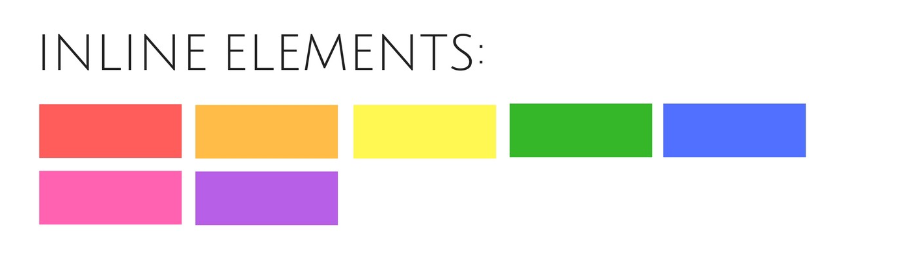

Скелет HTML-документа

HTML-документ состоит из «дерева» тегов. Далее приведён минимально необходимый набор тегов, который служит основой любого HTML-документа, как фундамент для дома.
<!DOCTYPE html>
<html lang="ru">
<head>
<!-- Служебная информация -->
</head>
<body>
<!-- Содержание -->
</body>
</html>
Объявление типа документа
<!DOCTYPE > - это не тег, а обязательная инструкция объявления типа документа.
Она нужна для того, чтобы сообщить браузеру в какой версии HTML написан
документ.
По доктайпу браузер определяет версию HTML и правильно отображает страницу. Объявление типа документа должно быть самым первым что видит браузер во время обработки HTML-документа.
<!-- Указывает на то, что документ написан по спецификации HTML Living Standard -->
<!DOCTYPE html>
Раньше у HTML были версии, последняя это HTML5. Сейчас HTML Living Standard это единая спецификация языка HTML, в которой отказались от версий, она просто обновляется. Если говорят о HTML5, то это тоже самое что «современный HTML» или HTML Living Standard, только короче.
Элементы верхнего уровня
Предназначены для формирования основной структуры веб-страницы и определяют разделы заголовка и тела документа.
Тег <html>
Корневой элемент документа как контейнер, который заключает в себе всё содержимое страницы. Все, что находится за его пределами, не воспринимается браузером как HTML-код и не обрабатывается.
<!DOCTYPE html>
<html lang="ru"></html>
Атрибут lang указывает на каком языке написан текст страницы. Это необходимо
для ассистивных технологий, таких как скринридеры и т. п.
Тег <head>
Предназначен для хранения служебной информации о странице: заголовок, описание, кодировку и т. д. Вся эта информация не отображается в окне браузера, однако содержит данные, которые указывают браузеру как следует обрабатывать страницу.
<!DOCTYPE html>
<html lang="ru">
<head>
<!-- Служебная информация -->
</head>
</html>
Тег <body>
Содержит контент будущей веб-страницы. Контент, который должен отображаться на странице, следует располагать именно внутри этого тега.
<!DOCTYPE html>
<html lang="ru">
<head>
<!-- Служебная информация -->
</head>
<body>
<!-- Содержание -->
</body>
</html>
Теги заголовка документа
Группа служебных тегов, которые располагаются в шапке документа. Большинство из них напрямую не отображаются в окне браузера.
Заголовок страницы
Текст, размещенный внутри тега <title>, отображается во вкладке браузера. Длина
заголовка должна быть не более 60 символов, чтобы полностью поместиться в
заголовке. Текст заголовка должен содержать краткое описание содержимого
веб-страницы.
<!DOCTYPE html>
<html lang="ru">
<head>
<title>HTML5 это просто!</title>
</head>
<body>
<!-- Содержание -->
</body>
</html>
Метаданные
Тег <meta> используется для хранения информации предназначенной для браузера и
поисковых систем: установка кодировки документа, передача информации поисковым
системам и многое другое. Мета-тегов может быть несколько, потому что в
зависимости от используемых атрибутов они несут различную информацию.
Кодировку страницы необходимо указать для того, чтобы браузер корректно отобразил текст. Если этого не сделать или задать неверную кодировку, вместо символов браузер может отобразить иероглифы.
<!DOCTYPE html>
<html lang="ru">
<head>
<!-- utf-8 - самая распространенная кодировка -->
<meta charset="utf-8" />
<title>HTML5 это просто!</title>
</head>
<body>
<!-- Содержание -->
</body>
</html>
Краткое описание содержания помогает поисковым системам лучше проиндексировать страницу.
<!DOCTYPE html>
<html lang="ru">
<head>
<meta charset="utf-8" />
<meta name="description" content="Изучение основ HTML5 для новичков" />
<title>HTML5 это просто!</title>
</head>
<body>
<!-- Содержание -->
</body>
</html>
Мета-теги, которые понимает Google
Поток документа
Поток это вертикальный и горизонтальный порядок отображения элементов на странице. Вертикально поток идёт сверху вниз, и, по умолчанию, элементы отображаются на странице в том порядке, в котором они указаны в HTML-документе. Горизонтально поток идёт слева направо (или справа налево для восточных стран).
Все элементы, без исключения, это прямоугольные области, занимающие определённое место в так называемых «строках», как слова предложения на листе в линейку. Есть два основных типа элементов - блочные и строчные.
<!-- Абзац это блочный элемент -->
<p>Блочный элемент 1</p>
<p>Блочный элемент 2</p>
<p>Блочный элемент 3</p>
<!-- Ссылка это строчный элемент -->
<a href="">Строчный элемент 1</a>
<a href="">Строчный элемент 2</a>
<a href="">Строчный элемент 3</a>
Блочный элемент (block-level element) - занимает всю строку целиком вне зависимости от объёма его контента, поэтому несколько блочных элементов визуально идут друг за другом сверху вниз.

Строчный элемент (inline element) - занимает место по своему содержимому, поэтому несколько строчных элементов могут располагаться на одной строке. Когда в строке не хватает места для вмещения строчного элемента, он переносится на новую.
С потоком документа, блочными, строчными, блочно-строчными, а также флекс-элементами мы детально познакомимся в следующих занятиях.